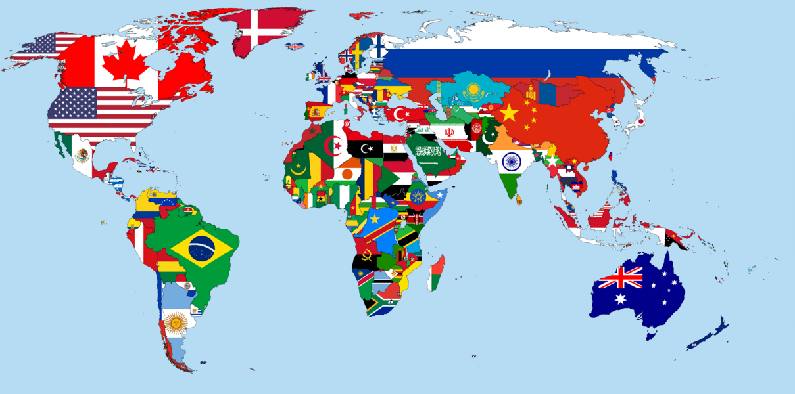

Страны мира
Доступная в Интернете «Голубая книга» содержит контактную информацию о всех 193 государствах-членах.
Страны распологаются по континентам в следующем виде

Видео о странах мира
Информация о странах мира
| № | Страна | Флаг | Столица | Площадь |
|---|---|---|---|---|
| 1 | Австралия |  |
Канберра | 7 692 024км² |
| 2 | Бразилия |  |
Бразилиа | 8 515 767км² |
| 3 | Аргентина |  |
Буэнос-Айрес | 2 780 400км² |
| 4 | Казахстан |  |
Астана | 2 724 902км² |
| Обьединенные ячейки добавляются с помощью параметра colspan | ||||